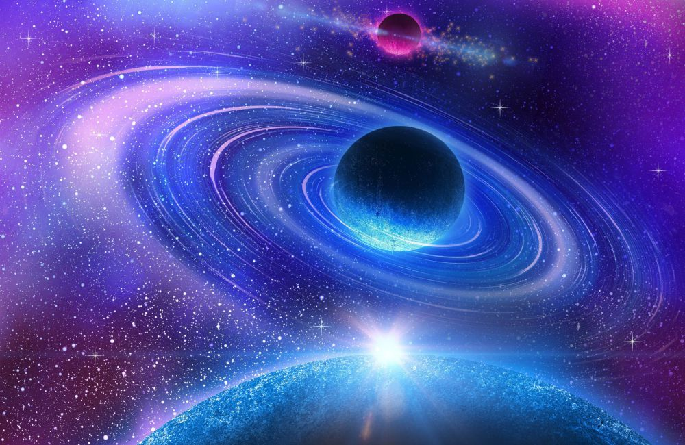

Galaxia

As galáxias são formadas por diversos elementos cósmicos, como gases, poeiras e estrelas. Elas formam grandes estruturas heterogêneas que apresentam processos dinâmicos. As galáxias são estruturas celestes presentes no Universo
Galáxia é uma grande estrutura formada por vários corpos celestes.
As galáxias contêm quantidades variadas de sistemas e aglomerados estelares e de tipos de nuvens interestelares. Entre esses objetos existe um meio interestelar esparso de gás, poeira e raios cósmicos
A matéria escura parece corresponder a cerca de 90% da massa da maioria das galáxias. Dados observacionais sugerem que podem existir buracos negros supermaciços no centro de muitas, se não todas as galáxias.
O Universo é tudo o que existe fisicamente, a soma do espaço e do tempo e as mais variadas formas de matéria, como planetas, estrelas, galáxias e os componentes do espaço intergalácticostas
O termo Universo pode ser usado em sentidos contextuais ligeiramente diferentes, denotando conceitos como o cosmo, o mundo ou a natureza
O universo observável tem de raio cerca de 46 bilhões de anos-luz. A observação científica do Universo levou a inferências de suas fases anteriores.
Estas observações sugerem que o Universo é governado pelas mesmas leis físicas e constantes durante a maior parte de sua extensão e história.
Teste Inclusão
O big-bang, bigue-bangue ou grande expansão é a teoria cosmológica dominante sobre o desenvolvimento inicial do universo.
A teoria do Big Bang é o modelo cosmológico prevalente que descreve como o Universo evoluiu desde os primeiros 10-44 segundos (Tempo de Planck) até hoje.
Observações de supernovas têm mostrado que o Universo está se expandindo a uma velocidade acelerada.
Big Bang" para se referir à ideia de que o universo estava originalmente muito quente e denso em algum tempo finito no passado. Desde então tem se resfriado pela expansão ao estado diluído atual e continua em expansão atualmente. A teoria é sustentada por explicações mais completas e precisas a partir de evidências científicas disponíveis e da observação.
Medições detalhadas da taxa de expansão do universo colocam o Big Bang em cerca de 13,8 bilhões * de anos atrás, que é considerada a idade do universo.

As galáxias são sistemas formados por milhares a trilhões de estrelas, poeira, gases e matéria escura. Sua classificação e identificação pode ocorrer de acordo com a forma, sendo assim elípticas, espirais ou irregulares (quando não possuem um contorno definido).
A Via Láctea, galáxia em que vivemos, é uma das maiores da região do Universo conhecida como Grupo Local e segue em processo de evolução, o que ocasionará a sua colisão com a galáxia de Andrômeda.
Na astronomia, o Universo corresponde ao conjunto de toda a matéria e energia existente. Ele reúne os astros: planetas, cometas, estrelas, galáxias, nebulosas, satélites, dentre outros. É um local imenso e para muitos, infinito. Note que do latim, a palavra universum significa “todo inteiro” ou “tudo em um só”.